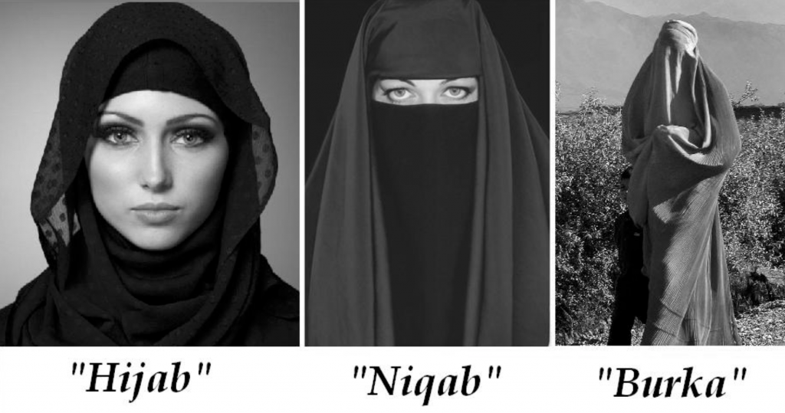

Sincerety and having correct intention in all Deeds and Statements, Apparent as well as Hidden.
Allah the most hight saids that all people are commanded to worship Him with sincerety, perform prayers, and give alms; and this is the correct religion(Al-Bayyina:5). [In speaking about the sacrificial animals during pilgrimage] Allah says that neither their flesh no their blood will reach Him; rather, piety of the believers will reach Him (Al-Hajj:37). He, the Most Sublime, also commands His Messenger to tell people that whether they hide what is in their bosoms or reveals it , Allah has knowledge of it (Al-Imran:29).
Aaishah(may Allah be please with her), relates that the prophet (SAW) said, "After the conqueas [of Macca], no Muslim is required to migrate [because Macca has become the land of Muslims from which they should not migrate]. Howvere, every Muslim is required to perform jihad (striving in the way of Allah) and to have the intention to do so. If you are asked to strive, you should do so."(Al-Bukhari and Muslim)
Abu Huraira(RA)relates that the Messenger of Allah (SAW) said "Allahdoes not look at your bodies and your shapes, He looks at your hearts."Muslim
Scholras say that performance repentance is obligatory on every person who commits an act of disobediance. Such acts are usually divided into two kinds: those that are between the person and Allah, where no right of humans are breached, and those that involve breaching of the rights of fellow humans. There are three conditions for penitence from sin of the first kind.
If one of these condition is not fulfilled, a person's penitence is not correct.
Concerning the second kind-when the sin involves breaching of the rights of fellow humans-then a fourth condition is required in addition to the three
On Repentance
Abu Sa id and Abu Huraira (RA)relate that the prophet(SAW) said, "Nothing afflicts a Muslim, be it tiredness, sickness, worry, sadness, harm, distress, or even pricking of a thron, but Allahwill cross out by it some of his sins."(Al-Bukhari and Muslim)
Founded in 1992. Under its connstituon the Head of state is the Chair man of the COUNCIL
